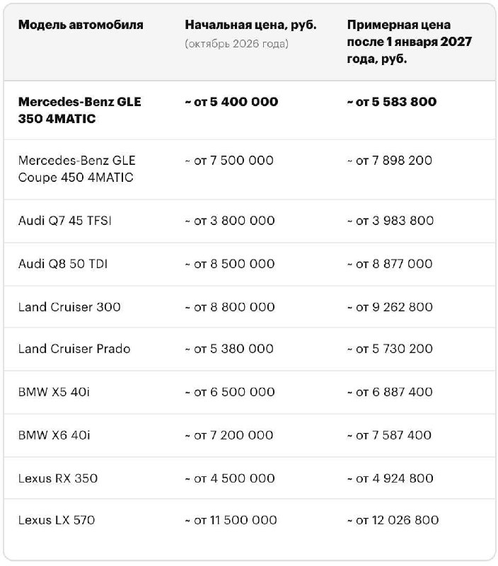
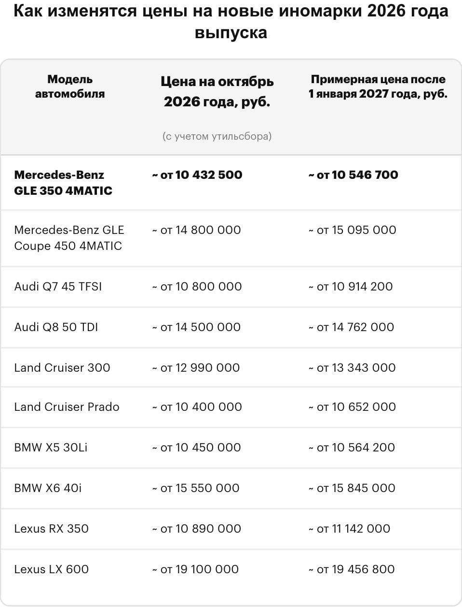
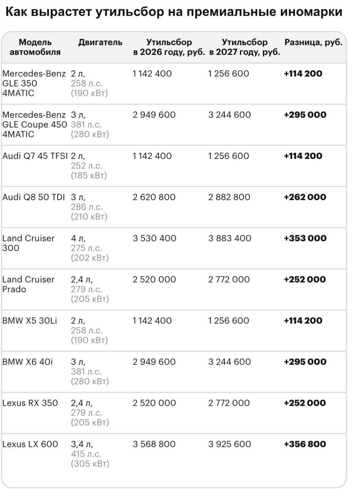
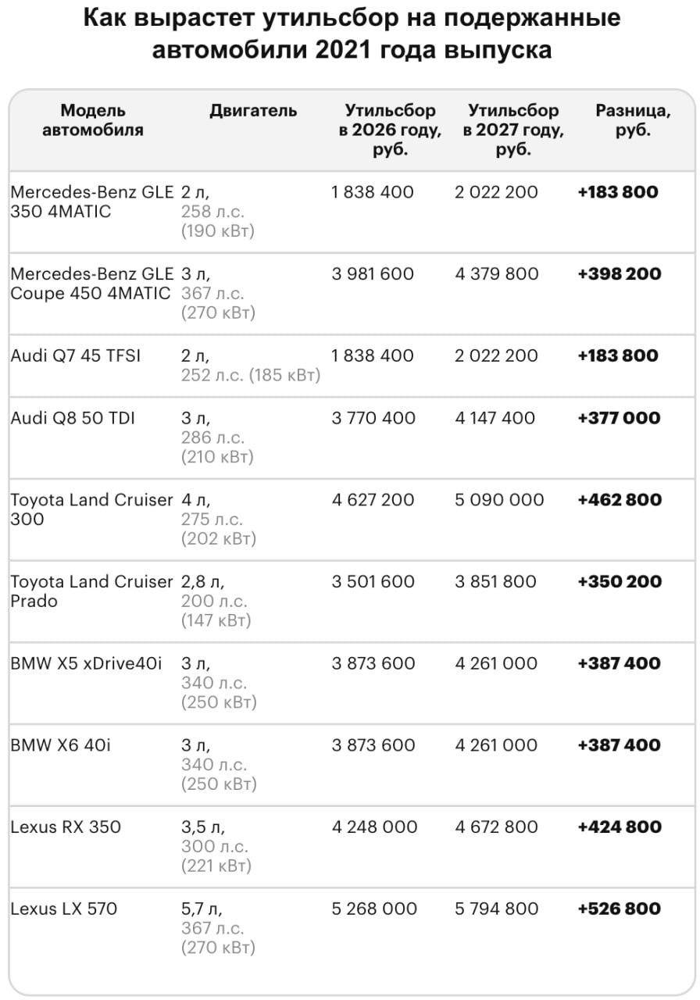
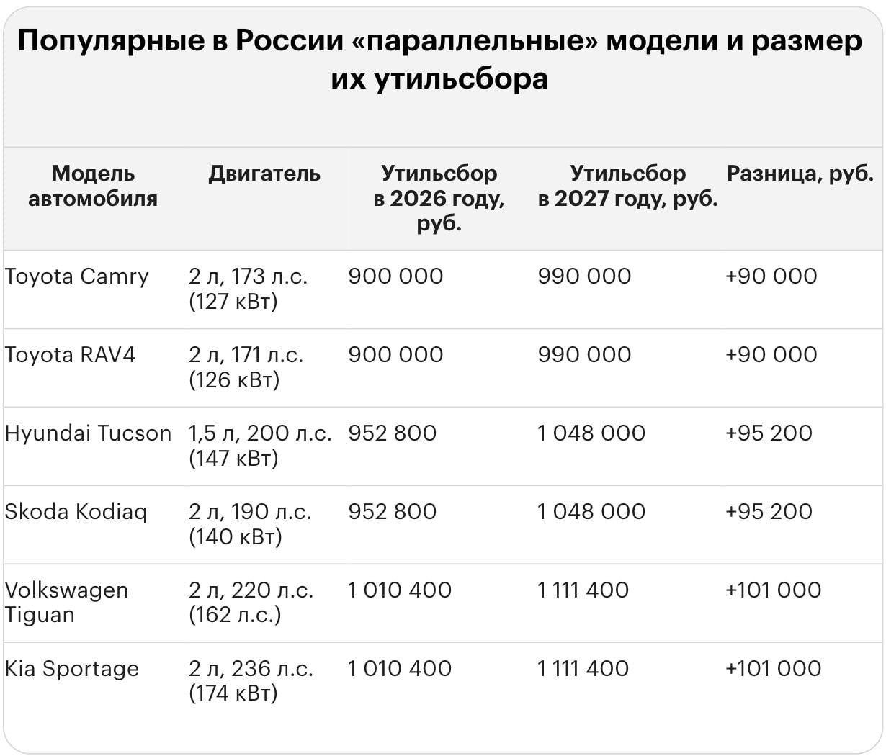

Москвач • Новости Москвы
@moscowach
Москвач • Новости Москвы
@moscowach
Утильсбор на некоторые автомобили с 2027 года вырастет за Lexus LX 570 он может достигнуть 579 млн за Land Cruiser 300 509 млн рублей.





💸 Утильсбор на некоторые автомобили с 2027 года вырастет — за Lexus LX 570 он может достигнуть 5,79 млн, за Land Cruiser 300 — 5,09 млн рублей.
Подержанные авто старше трех лет из-за этого также заметно подорожают.
Подержанные авто старше трех лет из-за этого также заметно подорожают.